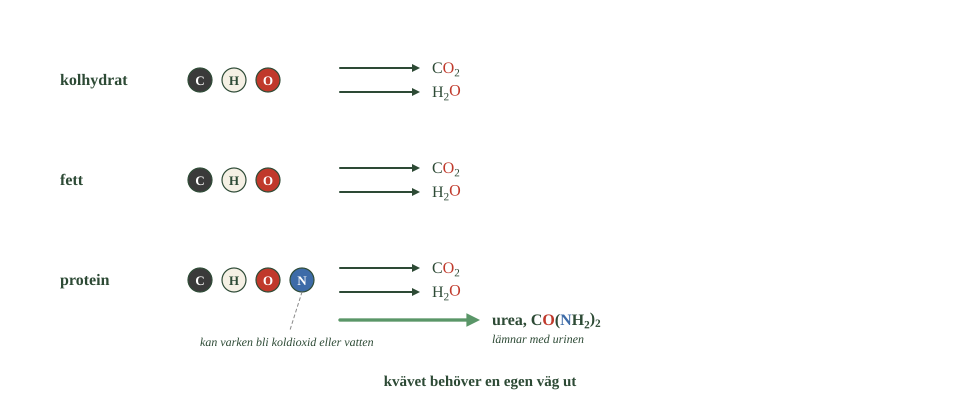
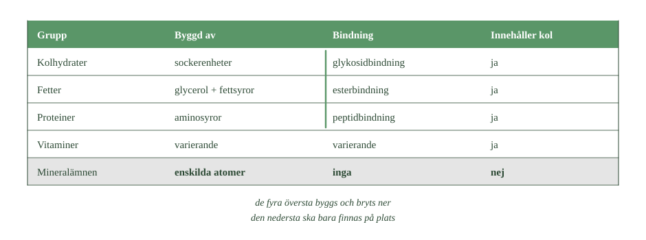

- Vad lämnar kroppen som koldioxid, och vad lämnar som vatten?
- Varför kan kvävet inte bli koldioxid eller vatten?
- Vilket giftigt ämne bildas när aminosyror bryts ner?
- Vad omvandlas kvävet till i levern?
- Var har du mött urea tidigare i boken?
Kolhydrater, fetter och proteiner är alla organiska ämnen. Men de är byggda olika, och det märks när kroppen bryter ner dem.
Kolhydrater och fetter innehåller kol, väte och syre.
Proteiner innehåller dessutom kväve — och det skapar ett problem som de andra två inte har.
Vitaminer och mineralämnen är i sin tur något helt annat. Vitaminer är organiska molekyler. Mineralämnen är grundämnen. Den skillnaden avgör hur kroppen kan hantera dem.
Kol blir koldioxid, väte blir vatten
När kolhydrater och fetter bryts ner lämnar kolet kroppen som koldioxid. Det transporteras med blodet till lungorna och andas ut.
Vätet bildar tillsammans med syre vatten.
Du känner igen principen från förbränningen i delkapitel 3. Ett ämne med kol och väte som reagerar fullständigt med syre ger koldioxid och vatten.
Kolhydrater och fetter innehåller bara kol, väte och syre. Deras atomer kan alltså lämna kroppen på de två vanliga vägarna.
Men vad händer med kvävet?
Proteinerna ger ett extra problem.
Aminosyrorna innehåller kväve i sina aminogrupper. När de bryts ner kan kolkedjan användas vidare — men kvävet måste tas om hand på något annat sätt.
Tänk efter varför.
En kväveatom kan inte bli koldioxid. Koldioxid innehåller bara kol och syre.
Den kan inte bli vatten. Vatten innehåller bara väte och syre.
Och kroppen kan inte heller göra om kvävet till kvävgas och andas ut det, trots att luften vi andas är full av kvävgas.
Kvävet behöver alltså en egen väg ut.
Ammoniak är giftigt
När aminosyror bryts ner kan ammoniak, \(\ce{NH3}\), bildas.
Ammoniak är giftigt redan i små mängder och får inte samlas i kroppen.
Det måste alltså göras om till något ofarligt, och det snabbt.
Lösningen är urinämne
I levern omvandlas kvävet till urinämne, som också kallas urea.
Formeln är \(\ce{CO(NH2)2}\). Varje molekyl innehåller två kväveatomer.
- Jämför de tre raderna. Vilken skiljer sig?
- Vilken färg har kväveatomen?
- Hur många pilar går ut från varje rad?

Urea är ofarligt och löser sig lätt i vatten. Det transporteras med blodet till njurarna och lämnar kroppen med urinen.
En gammal bekant
Urea känner du faktiskt igen.
Det var det ämne Friedrich Wöhler framställde 1828 — försöket som visade att organiska ämnen kunde tillverkas utan någon livskraft. Du mötte det i delkapitel 1.
Nu ser du varför kroppen behöver den molekylen: urea är kroppens sätt att bli av med kväve.
- Vad lämnar kroppen som koldioxid, och vad lämnar som vatten?
- Varför kan kvävet inte bli koldioxid eller vatten?
- Vilket giftigt ämne bildas när aminosyror bryts ner?
- Vad omvandlas kvävet till i levern?
- Var har du mött urea tidigare i boken?
Kolhydrater, fetter och proteiner är alla organiska ämnen, men de är byggda på olika sätt. Det märks när kroppen bryter ner dem.
Kolhydrater och fetter innehåller kol, väte och syre. Proteiner innehåller dessutom kväve — och det skapar ett problem de andra inte har.
Vitaminer och mineralämnen skiljer sig också åt. Vitaminer är organiska molekyler. Mineralämnen är grundämnen. Den skillnaden avgör hur kroppen kan hantera dem.
Kol blir koldioxid och väte blir vatten
När kolhydrater och fetter bryts ner lämnar kolet kroppen som koldioxid, via blodet och lungorna.
Vätet bildar tillsammans med syre vatten.
Du känner igen principen från förbränningen i delkapitel 3: ett ämne med kol och väte som reagerar fullständigt med syre ger koldioxid och vatten.
Kolhydrater och fetter innehåller bara kol, väte och syre. Deras atomer kan alltså lämna kroppen på de två vanliga vägarna.
Men vad händer med kvävet?
Proteinerna ger ett extra problem.
Aminosyrorna innehåller kväve i sina aminogrupper. När de bryts ner kan kolkedjan användas vidare — men kvävet måste tas om hand på något annat sätt.
En kväveatom kan inte bli koldioxid, för koldioxid innehåller bara kol och syre. Den kan inte heller bli vatten, för vatten innehåller bara väte och syre.
Och kroppen kan inte göra om kvävet till kvävgas och andas ut det.
Det behövs alltså en egen väg.
Lösningen är urinämne
När aminosyror bryts ner kan ammoniak, \(\ce{NH3}\), bildas. Ammoniak är giftigt och får inte samlas i kroppen.
I levern omvandlas kvävet därför till urinämne, som också kallas urea. Formeln är \(\ce{CO(NH2)2}\), och varje molekyl innehåller två kväveatomer.
Ämnet transporteras med blodet till njurarna och lämnar kroppen med urinen.
Urea känner du igen. Det var det ämne Friedrich Wöhler framställde 1828, och som visade att organiska ämnen kunde tillverkas utan någon livskraft.
Nu ser du varför kroppen behöver den molekylen: urea är kroppens sätt att bli av med kväve.
Att göra sig av med kväve kostar energi
Standardtexten säger att kvävet blir urea i levern och lämnar med urinen. Det stämmer. Men formuleringen antyder att omvandlingen bara sker — och den gör den inte gratis.
Att bygga en ureamolekyl kräver flera steg, en serie enzymer, och energi. Reaktionsföljden kallas ureacykeln, och den upptäcktes 1932 av Hans Krebs — samma forskare som gav namn åt citronsyracykeln.
Kroppen betalar alltså för att bli av med kvävet. Det är ovanligt: det mesta kroppen gör med mat ger energi, men den här processen kostar.
Varför göra sig så mycket besvär?
Därför att alternativet är värre. Ammoniak är giftigt eftersom det stör cellernas syrabalans och särskilt påverkar hjärnan. Redan låga halter i blodet ger förvirring, och höga kan ge medvetslöshet.
Och här blir det intressant. Olika djur har löst samma problem på olika sätt, beroende på hur mycket vatten de har tillgång till.
Fiskar gör ingenting alls. De släpper ut ammoniak direkt genom gälarna, eftersom det späds ut omedelbart i vattnet runt dem. Billigast möjliga lösning.
Däggdjur gör urea. Det är ofarligt och löser sig lätt, men det kräver vatten att spola ut — och energi att tillverka.
Fåglar och reptiler gör ett tredje ämne, urinsyra, som knappt löser sig alls. Det kostar ännu mer energi men kräver nästan inget vatten. Det är därför fågelspillning är vit och kletig i stället för flytande — och därför ett fågelägg inte fylls av gift medan ungen växer.
Om modellen. Standardnivån presenterar urea som lösningen på kvävets problem. Det är rätt för oss. Men det finns tre lösningar i naturen, och vilken ett djur använder avgörs inte av kemin utan av hur mycket vatten det har råd att göra av med.
- Vad har alla vitaminer gemensamt kemiskt?
- Vad gör egentligen ett ämne till ett vitamin?
- Vilka vitaminer är fettlösliga?
- Vad avgör om en molekyl är fettlöslig eller vattenlöslig?
- Varför kan kroppen lagra vissa vitaminer men inte andra?
Vitaminer har inget gemensamt kemiskt
Vitaminer är organiska ämnen, alltså kolföreningar.
Men här slutar likheterna.
Till skillnad från kolhydrater, fetter och proteiner bildar vitaminerna ingen kemisk familj. Deras molekyler kan se helt olika ut. Vissa är små, andra stora. Vissa har ringar, andra kedjor.
Det finns ingen funktionell grupp de delar. Ingen bindningstyp. Ingenting.
Så vad gör dem till vitaminer?
Svaret har ingenting med kemi att göra.
Ett ämne är ett vitamin om kroppen behöver det och inte kan tillverka tillräckligt av det själv.
Det är en definition som handlar om oss, inte om molekylen.
Vitamin är alltså ett biologiskt begrepp, inte ett kemiskt. Det säger vad ämnet gör för oss — inte hur det ser ut.
En kemisk indelning finns ändå
Det finns en indelning som faktiskt handlar om molekylerna: om de är fettlösliga eller vattenlösliga.
A, D, E och K är fettlösliga. Deras molekyler har stora opolära delar som liknar kolväten.
B-vitaminerna och C är vattenlösliga. De har fler grupper som kan samverka med vatten, till exempel hydroxylgrupper.
Dragkampen igen
Principen känner du igen från alkoholerna i delkapitel 4.
Det pågår en dragkamp inuti molekylen. OH-grupper och liknande drar mot vatten. Kolvätedelen drar bort från det.
Vinner kolvätedelen blir ämnet fettlösligt. Vinner grupperna blir det vattenlösligt.
Samma dragkamp som avgjorde om etanol löser sig i vatten avgör alltså var ett vitamin hamnar i kroppen.
Därför beter de sig olika
Lösligheten bestämmer hur vitaminerna transporteras och lagras.
Fettlösliga vitaminer följer med fettet och lagras i lever och fettvävnad. Kroppen kan bygga upp förråd av dem.
Vattenlösliga vitaminer löser sig i kroppens vätskor. Överskott sköljs ut med urinen, och förråden blir små.
Det är alltså kemin — inte biologin — som avgör den skillnaden.
- Vad har alla vitaminer gemensamt kemiskt?
- Vad gör egentligen ett ämne till ett vitamin?
- Vilka vitaminer är fettlösliga?
- Vad avgör om en molekyl är fettlöslig eller vattenlöslig?
- Varför kan kroppen lagra vissa vitaminer men inte andra?
Vitaminer är kolföreningar utan gemensam struktur
Vitaminer är organiska ämnen, alltså kolföreningar.
Men till skillnad från kolhydrater, fetter och proteiner bildar de ingen kemisk familj. Deras molekyler kan se helt olika ut.
Det som gör ett ämne till ett vitamin är alltså inte en funktionell grupp eller en bindningstyp. Det är att kroppen behöver ämnet och inte kan tillverka tillräckligt av det själv.
Vitamin är därför ett biologiskt begrepp, inte ett kemiskt. Det säger vad ämnet gör för oss, inte hur det ser ut.
Fettlösliga och vattenlösliga
Kemiskt finns ändå en meningsfull indelning: om molekylen är fettlöslig eller vattenlöslig.
Vitaminerna A, D, E och K är fettlösliga. Deras molekyler har stora opolära delar som liknar kolväten.
B-vitaminerna och vitamin C är vattenlösliga. De har fler grupper som kan samverka med vatten, till exempel hydroxylgrupper.
Principen känner du igen från alkoholerna. Det pågår en dragkamp i molekylen: OH-grupper drar mot vatten, kolvätedelen drar bort från det.
Vinner kolvätedelen blir ämnet fettlösligt. Vinner grupperna blir det vattenlösligt.
Därför beter de sig olika i kroppen
Lösligheten avgör hur vitaminerna transporteras och lagras.
Fettlösliga vitaminer följer med fettet och lagras i lever och fettvävnad. Kroppen kan bygga upp förråd.
Vattenlösliga vitaminer löser sig i kroppens vätskor. Överskott lämnar kroppen med urinen, och förråden blir mindre.
Det är alltså samma kemi som förut som avgör hur kroppen hanterar ämnet.
Vitamin D tillverkas av ljus
Standardtexten säger att vitaminer är ämnen kroppen inte kan tillverka själv. Det är definitionen, och den fungerar — men det finns ett undantag som är kemiskt märkligare än det låter.
Vitamin D kan kroppen tillverka. I huden, med hjälp av solljus.
Och reaktionen är av ett slag du bara mött en gång tidigare i boken.
I huden finns en molekyl som liknar kolesterol och som innehåller flera sammanbundna ringar. När UV-strålning träffar den absorberas energin, och en av ringarna bryts upp.
Molekylen viker sedan om sig till en ny form, och den formen är vitamin D.
Lägg märke till vad som driver reaktionen. Inte värme. Inte ett enzym. Ljus.
En sådan reaktion kallas fotokemisk, och det enda andra exemplet i det här kapitlet är fotosyntesen. Där bryter ljuset isär vattenmolekyler. Här bryter det upp en ring.
Det förklarar också varför reaktionen inte sker genom ett fönsterglas. Glas släpper igenom synligt ljus men stoppar det mesta av UV-strålningen — och det är UV som har tillräcklig energi för att bryta bindningen.
Och det förklarar varför vitamin D är ett problem på nordliga breddgrader. Under vinterhalvåret står solen så lågt att UV-strålningen till stor del absorberas i atmosfären innan den når marken.
Om modellen. Att vitaminer "inte kan tillverkas av kroppen" är en användbar definition, men vitamin D bryter mot den. Det intressanta är inte undantaget i sig utan hur det tillverkas: med en reaktion som drivs av ljus, vilket nästan ingenting annat i kroppen är.
- Vilka mineralämnen behöver kroppen?
- I vilken form finns de oftast i kroppens vätskor?
- Varför kan en järnatom inte brytas ner?
- Vad har kolhydrater, fetter, proteiner och vitaminer gemensamt?
- Vad skiljer mineralämnena från alla de andra?
Mineralämnen är grundämnen
När man talar om mineralämnen menar man grundämnen kroppen behöver.
Till exempel kalcium, järn, natrium, kalium, magnesium och zink.
De skiljer sig från allt annat i det här delkapitlet. De är inte organiska molekyler. De har inga kolkedjor. De kan inte byggas om.
I kroppens vätskor finns många av dem som joner — natrium som \(\ce{Na+}\), kalcium som \(\ce{Ca^2+}\), zink som \(\ce{Zn^2+}\).
Ett grundämne kan inte bli ett annat
Tänk på skillnaden.
En stärkelsemolekyl kan delas till mindre kolhydrater. Ett protein kan brytas ner till aminosyror. Ett fett kan delas i glycerol och fettsyror.
Men en järnatom kan inte brytas ner till något enklare och fortfarande vara järn.
Atomen kan ta upp eller avge elektroner och bli olika joner. Den kan bindas in i olika molekyler.
Men kärnan är densamma. Grundämnet är fortfarande järn.
Det är samma princip som hos tungmetallerna i delkapitel 3. Kemiska reaktioner flyttar atomer mellan föreningar — men förvandlar aldrig ett grundämne till ett annat.
Fem grupper, två sorter
Låt oss sammanfatta hela delkapitlet.
Kolhydrater byggs av sockerenheter, med glykosidbindningar. Fetter byggs av glycerol och fettsyror, med esterbindningar. Proteiner byggs av aminosyror, med peptidbindningar. Vitaminer är organiska molekyler av mycket varierande slag.
- Vilken rad ser annorlunda ut, och varför?
- Vad har de tre översta bindningarna gemensamt?
- Vilken grupp innehåller inget kol?

Alla fyra består av molekyler. De kan byggas om och brytas ner.
Mineralämnena är annorlunda. Där behöver kroppen själva grundämnet. En kalciumatom måste vara kalcium. En järnatom måste vara järn.
Delkapitlets slutsats
Det ger kontrasten som sammanfattar allt:
Livets kemi handlar dels om stora molekyler som hela tiden byggs och bryts ner — dels om enskilda atomer som bara måste finnas på rätt plats.
- Vilka mineralämnen behöver kroppen?
- I vilken form finns de oftast i kroppens vätskor?
- Varför kan en järnatom inte brytas ner?
- Vad har kolhydrater, fetter, proteiner och vitaminer gemensamt?
- Vad skiljer mineralämnena från alla de andra?
Mineralämnen är grundämnen
När man talar om mineralämnen menar man grundämnen kroppen behöver: kalcium, järn, natrium, kalium, magnesium och zink.
De skiljer sig från allt annat i delkapitlet. De är inte organiska molekyler och har inga kolkedjor som kan byggas om.
I kroppens vätskor förekommer många av dem som joner. Natrium som \(\ce{Na+}\), kalcium som \(\ce{Ca^2+}\), zink som \(\ce{Zn^2+}\).
Ett grundämne kan inte brytas ner till ett annat
En stärkelsemolekyl kan delas till mindre kolhydrater. Ett protein kan brytas ner till aminosyror.
Men en järnatom kan inte brytas ner till något enklare och fortfarande vara järn.
Atomen kan ta upp eller avge elektroner och bli olika joner. Den kan bindas in i olika molekyler. Men kärnan är densamma, och grundämnet är fortfarande järn.
Det är samma princip som hos tungmetallerna i delkapitel 3. Kemiska reaktioner kan flytta atomer mellan föreningar, men aldrig förvandla ett grundämne till ett annat.
Två olika sorters ämnen
Delkapitlet har visat att mycket olika ämnesgrupper kan förstås med samma kemiska idéer.
Kolhydrater byggs av sockerenheter. Fetter av glycerol och fettsyror med esterbindningar. Proteiner av aminosyror med peptidbindningar. Vitaminer är organiska molekyler av varierande slag.
Alla består av molekyler som kan byggas om och brytas ner.
Mineralämnena är annorlunda. Där behöver kroppen själva grundämnet. En kalciumatom måste vara kalcium.
Det är kontrasten som sammanfattar delkapitlet: livets kemi handlar dels om stora molekyler som hela tiden byggs och bryts, dels om enskilda atomer som bara måste finnas på rätt plats.
Järnet sitter fast i en fälla av kväveatomer
Standardtexten säger att mineralämnen är grundämnen som kroppen behöver på plats, och att de ofta finns som joner. Det stämmer. Men det säger inget om hur de hålls på plats — och den frågan är mer kemisk än den ser ut.
En fri järnjon i blodet vore farlig. Den skulle reagera med syre och starta kedjereaktioner som skadar celler, ungefär som när fett härsknar.
Kroppen har därför nästan inget fritt järn alls. I stället sitter järnet fast i molekyler byggda just för att hålla det.
Den viktigaste heter hem. Det är en platt ringstruktur med fyra kväveatomer som pekar inåt mot mitten — och järnjonen sitter fast mellan dem, som i en fälla med fyra gripklor.
En sådan bindning, där flera atomer i samma molekyl greppar en jon samtidigt, kallas kelat. Ordet kommer av grekiskans ord för klo.
Fyra bindningar är mycket starkare än en, och järnjonen släpper inte.
Hem sitter i sin tur inne i proteinet hemoglobin — fyra hemgrupper per molekyl. Det är på järnatomen i hem som syret binder, och det var samma plats kolmonoxiden tog i delkapitel 3.
Samma princip används för andra metaller. Zink, magnesium och kobolt sitter alla fast i proteinstrukturer byggda efter deras storlek och laddning.
Om modellen. "Kroppen behöver grundämnet på plats" är rätt, men platsen är ingen slump. Varje metalljon har en egen fålla, formad efter just den jonen — och det är fållorna, inte metallerna, som kroppen tillverkar.
Laddar övningskort…
Laddar frågor ...